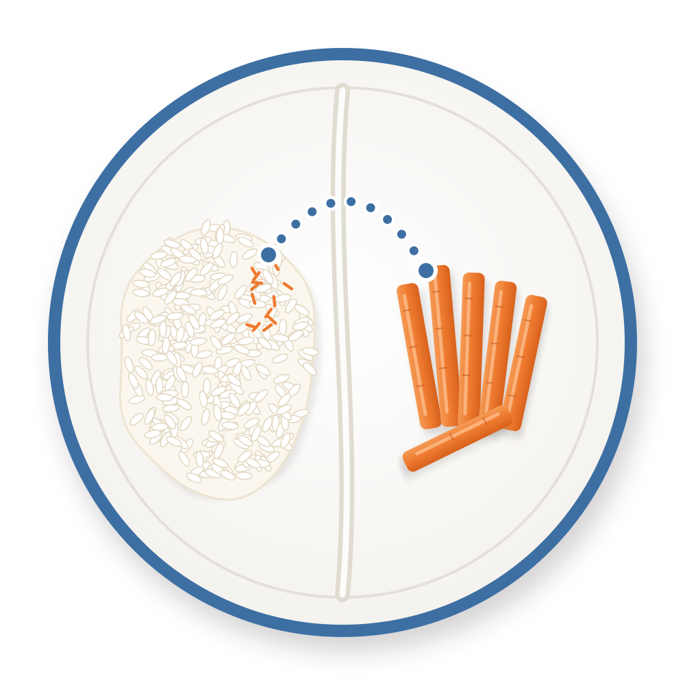
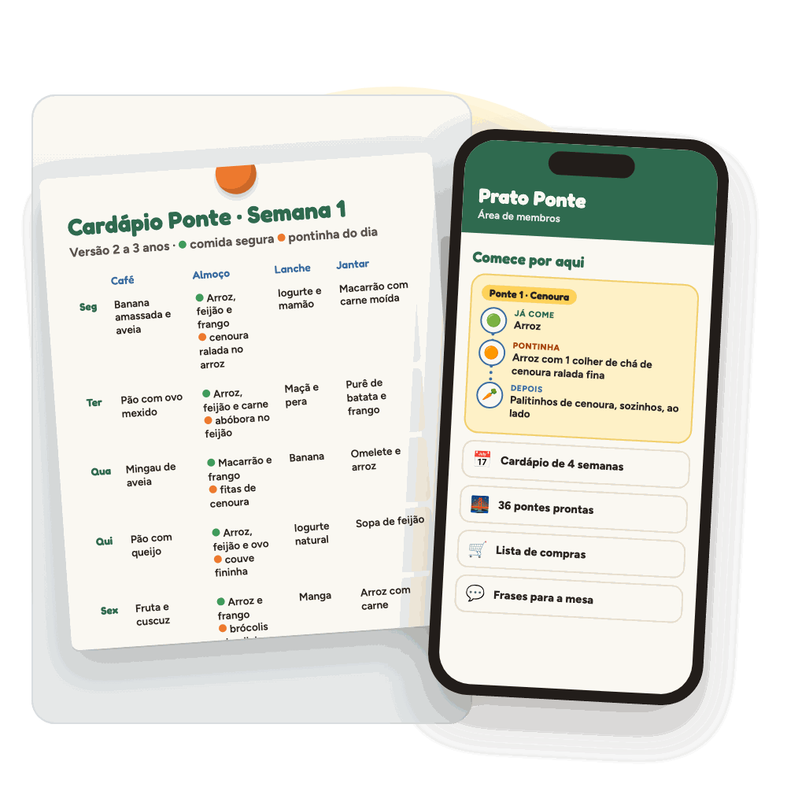

Descubra por onde começar para a criança aceitar legumes, de acordo com a idade e com o que ela já come
Responda perguntas rápidas sobre a rotina e veja as 3 primeiras pontes do seu filho: do que ele já come bem até o alimento que ele ainda recusa.

Para mães e pais de crianças de 2 a 6 anos. O teste é gratuito; no final você pode, se quiser, levar o cardápio completo.
Material educativo. Não substitui o pediatra.
- Separando as comidas seguras...
- Montando as pontes até os alimentos novos...
- Ajustando o cardápio para a idade da criança...
As 3 primeiras pontes do seu filho estão prontas
O que o seu teste mostra
- Idade:
- Já come bem:
- Você quer chegar em:
- Nessa idade, isso é esperado: é o Alarme do Novo.
- O que vai mudar a sua mesa: o novo chegar colado no que a criança já come, várias vezes, sem pressão.
O Prato Ponte foi feito para crianças de 2 a 6 anos. Com crianças maiores, a ideia da ponte também ajuda, mas o cardápio não foi pensado para essa idade.
As suas 3 primeiras pontes
Sem esconder e sem forçar: você conta o que tem no prato, e ninguém obriga a comer. Pesquisas mostram que muitas crianças precisam encontrar o mesmo alimento várias vezes (de 8 a 15) até aceitar. O cardápio completo já faz essas repetições por você.
Assista: a Lívia explica como usar as suas pontes
O vídeo não carregou agora. A oferta já está logo abaixo.
Oferta
Prato Ponte completo
Pagamento único · Pix ou cartão
QUERO MEU PRATO PONTEAcesso no seu e-mail logo após o pagamento · Garantia de 7 dias

Prato Ponte
O cardápio de 4 semanas para crianças de 2 a 6 anos, com as pontes prontas do que a criança já come até os alimentos que ela ainda recusa, mais a lista de compras e as frases para a mesa.
O que você recebe
- Comece por aqui (montado com as suas respostas): a versão do cardápio para a idade da criança, as 3 primeiras pontes, tiradas do que a criança já come e do que você quer que ela aceite, e as receitas da semana 1 que cabem no seu tempo de cozinha.
- Cardápio Ponte de 4 semanas, na versão da idade: café da manhã, almoço, lanche da tarde e jantar, com medidas caseiras. A base é arroz, feijão e comida de verdade, como pede o Guia Alimentar para a População Brasileira. Cada refeição marca a comida segura (🟢) e a pontinha do dia (🟠).
- 36 pontes prontas: 3 pontes para cada um dos 12 alimentos mais recusados, partindo das comidas seguras mais comuns.
- Lista de compras de cada semana, separada por seção do mercado.
- 20 receitas-ponte de até 20 minutos.
- Frases para a mesa: 15 frases para usar no lugar de “só mais uma colherada” e o que dizer quando a criança recusa.
- Diário das pontes: uma tabela para marcar cada vez que a pontinha apareceu e como a criança reagiu (👀 olhou, ✋ tocou, 👅 provou, 😋 comeu). Para você ver o avanço, que às vezes é só olhar.
- Quando procurar o pediatra: os sinais de alerta, explicados.
Os 12 alimentos com pontes prontas. Em amarelo, com ✓: os que você marcou no teste.
📱 Tudo na área de membros, para ler no celular, e em PDF para imprimir o cardápio e a lista e colar na geladeira.
Como funciona: Prato Ponte em 3 passos
Comida segura 🟢
Todo prato tem pelo menos um alimento que a criança já come bem. Assim, o alarme fica quieto.
Pontinha 🟠
O alimento novo entra pequeno, parecido e colado no conhecido. Sem esconder: você conta que tem.
Repetir sem pressão 🔁
A mesma pontinha volta em outros dias, de outro jeito, e ninguém obriga a comer. O cardápio já faz as repetições.
Para quem é (e para quem não é)
Para quem é
Mães e pais de crianças de 2 a 6 anos que comem sempre as mesmas coisas e recusam legumes.
Para quem não é
Não é tratamento. Se a criança tem alergia, autismo, dificuldade para engolir ou está perdendo peso, o caminho é o pediatra e um nutricionista.
Por que é tão barato?
É digital e a gente quer que caiba no bolso de qualquer mãe.
Prato Ponte completo
Pagamento único · Pix ou cartão
QUERO MEU PRATO PONTESem mensalidade. Acesso vitalício.
Garantia de 7 dias. Se não gostar, é só pedir o reembolso dentro desse prazo e você recebe o valor de volta.
Perguntas frequentes
Como eu recebo?
Assim que o pagamento é aprovado, o acesso chega no e-mail que você usar na compra. Quem envia é a Cakto, a plataforma de pagamento. No cartão é na hora; no Pix, logo depois da confirmação. Dá para ler tudo no celular e imprimir o PDF.
Serve para qual idade?
Para crianças de 2 a 6 anos. O cardápio tem duas versões: uma para 2 a 3 anos e outra para 4 a 6 anos.
É um cardápio personalizado?
O “Comece por aqui” é montado com as suas respostas: a versão da idade, as 3 primeiras pontes e as receitas da semana 1 que cabem no seu tempo. O cardápio de 4 semanas é o mesmo para todas as crianças da mesma faixa de idade e não é uma prescrição individual. Para um plano individual, o caminho é a consulta com um nutricionista.
Quem montou o cardápio?
O cardápio foi montado a partir dos guias alimentares do Ministério da Saúde (o Guia Alimentar para a População Brasileira e o Guia Alimentar para Crianças Brasileiras Menores de 2 Anos) e das orientações da Sociedade Brasileira de Pediatria. Conteúdo revisado por: [NOME DA NUTRICIONISTA, CRN — PREENCHER].
Precisa de ingrediente caro?
Não. A base é arroz, feijão, legumes, frutas, ovo e carnes do dia a dia, o que tem em qualquer mercado ou feira. A lista de compras de cada semana já vem pronta.
Meu filho tem alergia, autismo ou outra condição, serve?
O Prato Ponte não é tratamento e não foi feito para esses casos. Se a criança tem alergia, autismo, dificuldade para engolir ou está perdendo peso, procure o pediatra e um nutricionista: são eles que podem avaliar e orientar.
É assinatura?
Não. É um pagamento único de R$ 27, sem mensalidade.
E se eu não gostar?
Você tem 7 dias de garantia. Se não gostar, pede o reembolso dentro desse prazo e recebe o valor de volta.
Sinais de alerta
- Dor ao comer
- Engasgo ou tosse frequente na hora de comer
- Vômitos
- Perda de peso ou parada no crescimento
- Recusa de grupos inteiros de alimentos
- Criança abatida
Se aparecer algum, procure o pediatra antes de qualquer cardápio.